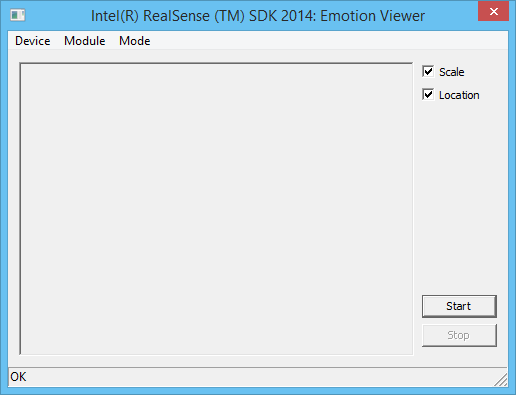
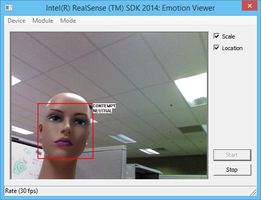

Sample: FF_EmotionViewer[.cs] [Preview] |
Top Previous Next |
|
Introduction The FF_EmotionViewer[.cs] samples are GUI sample applications that demonstrate the features of the SDK emotion detection module. The samples track faces and display the face emotion states next to the tracked faces. The sample with the .cs suffix is written in C#. The sample without is written in C++. Launch You can launch the prebuilt samples directly from the $(RSSDK_DIR)/bin/$(Platform)folder of the SDK installation, or compile and execute within the Microsoft Visual Studio. The project and source files are located under $(RSSDK_DIR)/sample/FF_EmotionViewer (C++) or $(RSSDK_DIR)/framework/CSharp/FF_EmotionViewer.cs (C#). Menu Options From the menu, you can select the input device, the emotion module, and the operating mode (live streaming mode, playback mode, and recording mode), as shown in Figure 129:  Figure 129: Sample emotion_viewer Menus GUI Options Click the Start button to load and activate the emotion viewer module. Check the Scale option to scale the images to the size of the display panel, and the Location option to toggle the box on and off around each detected face. This option does not turn off emotion captions. Emotions There are seven emotion labels (Anger, Contempt, Disgust, Fear, Joy, Sadness, and Surprise), and three sentiment labels (Negative, Positive, and Neutral). The detected emotion caption will display next to the face rectangle, as illustrated in Figure 130.  Figure 130: Sample emotion_viewer Menus
|